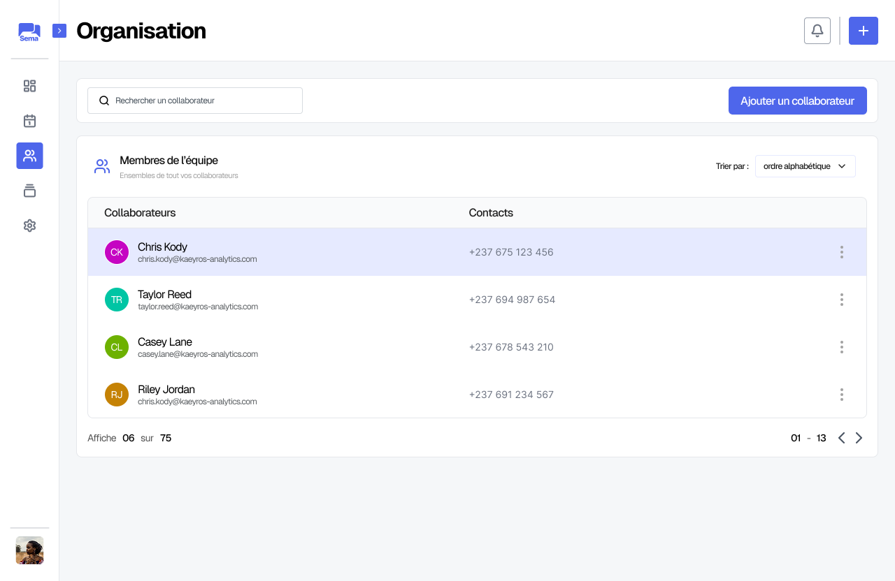

Organisation
Cette section est dediée à la gestion des collaborateurs et des les membres de l’équipe.
Il est possible d”ajouter d’un nouveau collaborateur :
De modifier des coordonnées d’un collaborateur :
De supprimer un collaborateur de l’équipe :